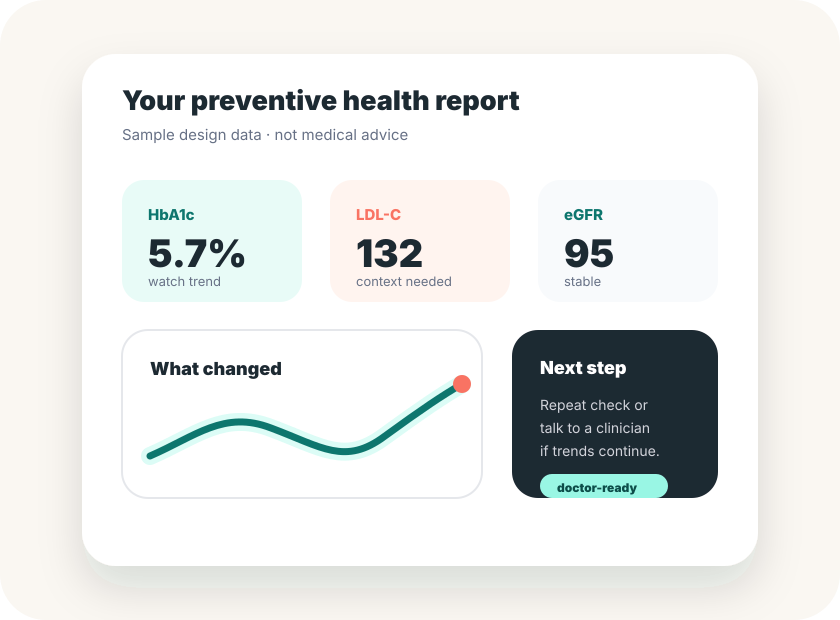

Our Approach
Risk-based, understandable, and continuous prevention.
ANTES Health does not start with a generic lab package. We start with the person: age, family history, habits, previous results, and risk factors.

Evidence-informed
A prevention journey built on evidence.
Our MVP is guided by preventive screening recommendations, health literacy principles, and responsible digital health design.
Hypertension screening
Screening adults for hypertension is recommended; diagnostic confirmation should use measurements outside the clinical setting before treatment.
02Prediabetes prevention
Risk-based diabetes screening guidance emphasizes preventive intervention when prediabetes is found.
03Kidney markers
For people at risk, kidney guidance emphasizes GFR and albuminuria, plus repeat testing to confirm abnormal findings.
04Responsible AI
AI can support communication and workflows, but health products need human oversight, safety, privacy, and governance.
Visual flow
From lab results to action.
Information flows from user context and lab markers into a prevention layer, then into reports, follow-up, and doctor-ready summaries.
Inputs
Prevention logic
Risk rules · trend detection · plain-language explanation · safety flags · referral rules
Outputs
The goal is not to replace clinical judgment. The goal is to put the right context in front of the person and the professional at the right time.
What we do
- Recommend preventive tests based on risk profile.
- Transform lab results into understandable explanations.
- Track markers over time.
- Send reminders and follow-up prompts.
- Prepare doctor-ready summaries.
What we do not do
- We do not replace physicians.
- We do not provide emergency care.
- We do not diagnose automatically.
- We do not sell unnecessary testing.
- We do not share health data without consent.